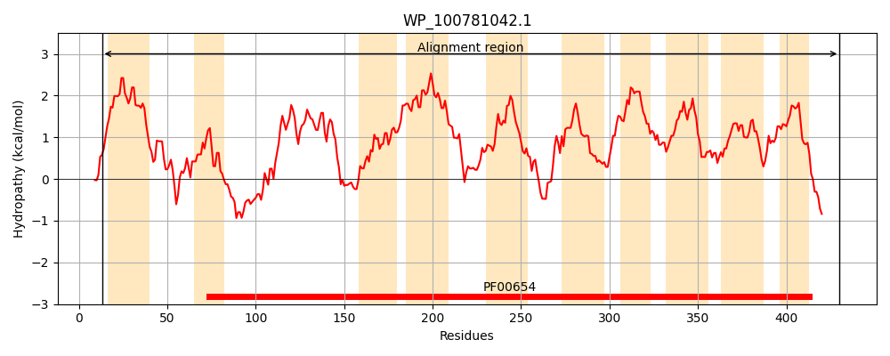
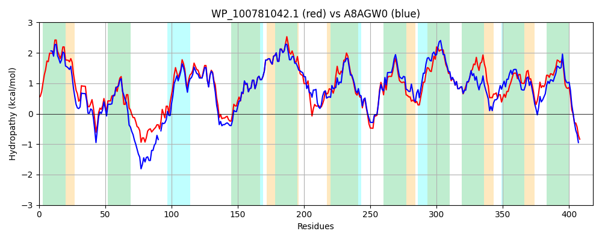

Hit Accession: A8AGW0
Hit TCID: 2.A.49.5.4
Hit Description: gnl|BL_ORD_ID|760 gnl|TC-DB|A8AGW0|2.A.49.5.4 Voltage-gated ClC-type chloride channel ClcB OS=Citrobacter koseri (strain ATCC BAA-895 / CDC 4225-83 / SGSC4696) GN=clcB PE=3 SV=1
Mach Len: 418
e:0.000000
Query TMS Count : 10
Hit TMS Count: 11
TMS-Overlap Score: 9.200000
Predicted Substrates:CHEBI:3731;chloride
BLAST Alignment:
Score: 1606 , Bit scores: 623 bits, E-value: 0.0e+00, Alignment length: 418, Percentage identity: 76
Query: 13 MFRRLLIATLIGLLAALAVALFRHAMVVLETLFLGNDSGSLVNAAQSLPAWRRLITPALGGLAAGTLLWLWQRRSIARPHAATDYMEALETGDGCFDTPASLVKSLASLLVVVTGSAIGREGAMILLAALAASLFARRFTPQTEWKLWVACGAAAGMASAYHAPLAGSLFIAEILFGTLMLASLGPVVISAVIALLLTQFLNGGATPLYHVVLQQNLSALHYGLMLATGLLAGVCGPLFIWLMDSSHRGFVKLKLTPPWQLALGGLIVGGLSLITPAVWGNGYSVVQSYLQILPSGVLLAGVFLCKLLAVLASSGSGAPGGVFTPTLFVGLAMGMLFASVSGLWLPGNEEMAMMIGLTGMAAFLAATTHAPIMSTLMICEMTGQYALLPGLLITCVVASVLSRTLRRDSIYRHHVAEH 430
MFRRLLIAT+IG+LAALAVA FRHAM+VLE LFL ND+GSLVNAA +L WRRLITPA+GGLAAG LLW WQ+ + RPHA TDYMEAL+T DG FD ASLVKSLASLLVV +GSAIGREGAMILLAALAAS FA+R TP+ EWKLW+ACGAAAGMASAYHAPLAGSLFIAEILFGTLMLASLGPVVISAV+ALL T L+GG LY V L +L Y ++++TGL+AGVCGPLF+WLM ++H GF++LKL+PPWQLALGG IVG LSL+TPAVWGNGYSVVQS+L P ++AG+F+CKLLAVLASSGSGAPGGVFTPTLF+GL++GML+ + G WLPG +EMA+++GLTGMA LAATTHAP+MSTLMICEMTG+Y LLPGLLI CVVASVLSRTLR DS+YR H AEH
Sbjct: 1 MFRRLLIATIIGILAALAVAGFRHAMLVLEWLFLRNDTGSLVNAATNLSPWRRLITPAVGGLAAGALLWGWQKMNQQRPHAPTDYMEALQT-DGQFDYGASLVKSLASLLVVASGSAIGREGAMILLAALAASCFAQRCTPREEWKLWIACGAAAGMASAYHAPLAGSLFIAEILFGTLMLASLGPVVISAVVALLTTHLLSGGNALLYTVHLSLDLHVREYAMIISTGLVAGVCGPLFMWLMTTTHNGFIRLKLSPPWQLALGGFIVGLLSLLTPAVWGNGYSVVQSFLLSPPLLSVIAGIFICKLLAVLASSGSGAPGGVFTPTLFIGLSIGMLYGRMWGFWLPGADEMAILLGLTGMATLLAATTHAPMMSTLMICEMTGEYRLLPGLLIACVVASVLSRTLREDSVYRQHTAEH 417 | Protein Hydropathy Plots: |
|---|
|  |  |
Pairwise Alignment-Hydropathy Plot:
|
|---|
|  |